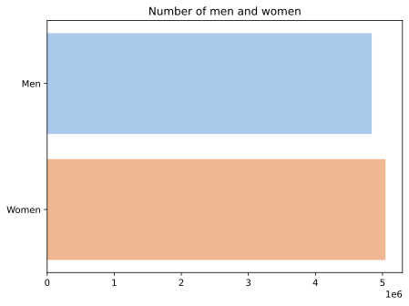
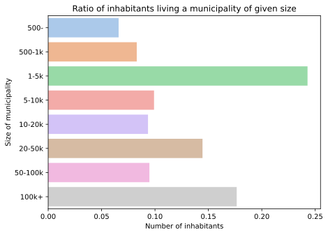
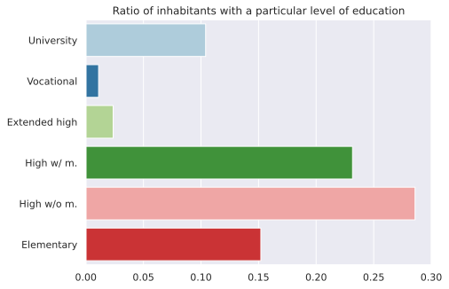
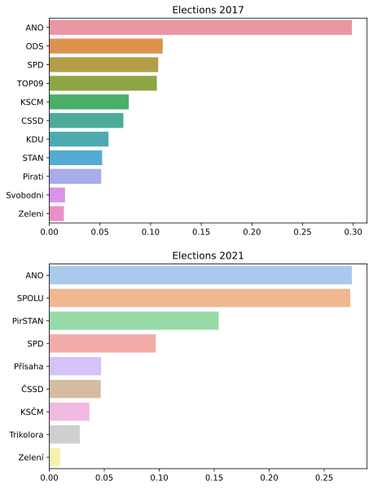

NDBI048 - GeoData - EDA
Introduction
This document analyses data from the “Geodata” dataset. As the dataset is somewhat large, only its subset regarding election results and sociodemographic indicators will be analysed and used further with focus on modeling election results from - past election results and - sociodemigraphic data.
Dataset
This dataset contains election-district level sociodemographic data and election results. Fortunately the dataset is complete and contains no duplicities in data thus no cleaning has to be done. The dataset contains 14271 rows and 51 columns, each row representing one electoral district.
Columns
Meaning of each column is described in the provided file and is as follows:
obec_okrsek- district and municipality code, is unique and is used as indexobec- municipality (LAU2) codeokres- county (LAU1)kraj- region (NUTS3)vel.obce- number of inhabitantspar{21,17}vsezn- Parlimentary elections 2021/17, number of votes from the “electoral list”par{21,17}phcelkem- Parlimentary elections 2021/17, number of votes in districtpar{21,17}*- Parlimentary elections 2021/17, number of votes for a particular partyprez18zem2- Presidential elections 2018, 2nd round, number of votes for M. Zemanprez18dra2- Presidential elections 2018, 2nd round, number of votes for J. Drahosnazev_obce- municipality namenazev.pha- city name (same asnazev_obcefor non-statutary cities)sl11obyvatel- Census 2011, number of inhabitantssl11muzi- Census 2011, number of mensl11rozv- Census 2011, divorcedsl11deti- Census 2011, childrensl11seni- Census 2011, pensionerssl11kat- Census 2011, catholicssl11rom- Census 2011, romasl11vs- Census 2011, university educationsl11vos- Census 2011, vocational schoolsl11nast- Census 2011, extended high schoolsl11strm- Census 2011, high school with maturitasl11strb- Census 2011, high school without maturitasl11zakl- Census 2011, elementary schoolsl11zam- Census 2011, employedsl11pod- Census 2011, enterpreneursl11nezam- Census 2011, unemployedsl11neprduch- Census 2011, non-working pensionerssl11budov- Census 2011, number of buildings
Feature Extraction
Unfortunately all the values are absolute meaning that any model applied to the dataset would predict that in big districs parties tend to get more votes. Thus transforming all the values to ratios of total population in the district was needed. Also number of women was not provided and had to be calculated as total - men.
Exploration
We start with exploring the various sociodemogaphic indicators provided.
The total number of inhabitants described in the dataset is 9884171 with numbers of men and women being roughly equal.

One of the factors that could be influencing political preferences of people is the size of the municipality they live in. Close to 25% of people live in a small town.

Another factor influencing electoral behaviour could be the level of education. More than 50% of the population have high school education while just over 10% have a university degree.

In 2017 ANO won the elections by a huge margin, while in 2021 they’ve won as well but with much smaller lead.
Relationships
First, let’s explore how does size of municipality influence election results.